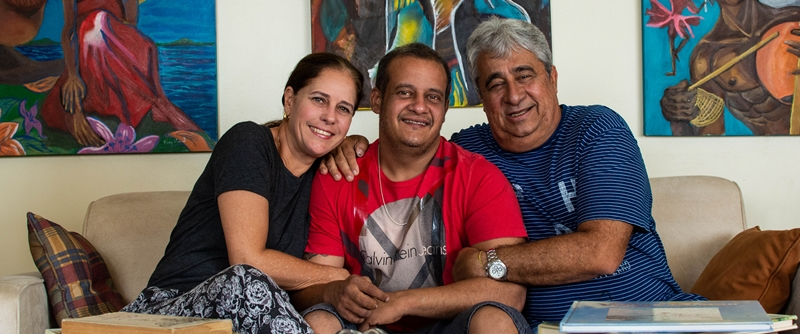
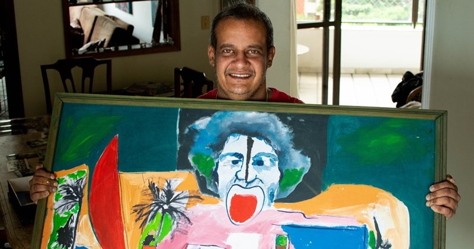
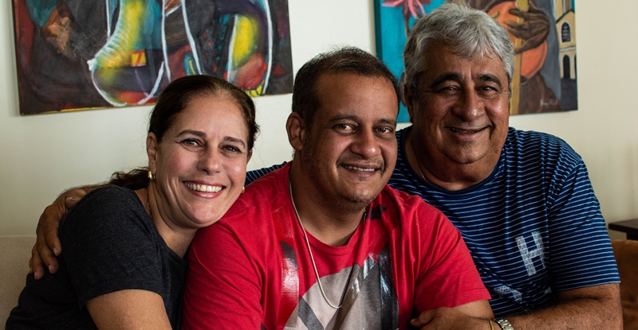

Laura Pinheiro teve duas surpresas: primeiro o filho, depois a adrenoleucodistrofia. Mãe aos 18. Mãe especial aos 26.
“É irônico até porque eu não escolhi nem ter e nem ter que devolver. A escolha não é nossa, né”.
Laura descobriu que estava grávida algumas semanas depois de passar no vestibular. Nessa época, ela morava sozinha em Caxias do Sul (RS). Depois do nascimento do filho, ela mudou de curso e de cidade – veio morar em Curitiba (PR) e cursar psicologia. O pequeno Theo sempre foi uma criança tranquila, amorosa e que não dava trabalho para a mãe.
Cuidando sozinha do filho, Laura teve alguns problemas durante o último ano de faculdade – não sobrava tempo para trabalhos, estágio obrigatório e o TCC. Para se formar, ela resolveu deixar o Theo com a avó durante a semana. Porém, isso não funcionou muito bem. Os dois choravam muito a cada nova despedida. A avó morava no interior e eles só se viam nos finais de semana.

Foi nessa transição que o primeiro sintoma da adrenoleucodistrofia começou a aparecer, mas não foi notado. O Theo deixou de ser uma criança tranquila e começou a apresentar um comportamento muito agitado e até agressivo na escola.
“Então a primeira alteração que ele teve foi comportamental. Então todo mundo ligou essa alteração ao fato da nossa separação. Então achavam que podia ser uma questão emocional, a mudança de comportamento na escola, a agressividade e tudo.”

O segundo sintoma apareceu logo depois e, como na maioria dos casos da doença, também passou despercebido. O Theo começou a ficar com a pele muito bronzeada – diferente da mãe, que tem a pele bem clara.
“Então tinha esse sintoma, que tava meio que na cara, mas ninguém podia imaginar porque a cidade da minha mãe era muito quente e ele passava muito tempo na piscina. E nas férias de dezembro nós passamos muito tempo na praia, então realmente ele tava bem mais bronzeado do que de costume.”
Era impossível de dizer que ele possuía alguma doença. Nessa fase, o Theo brincava, corria, andava de bicicleta e fazia tudo que uma criança deveria fazer. Mesmo assim, a escola recomendou que ele fizesse algumas sessões de acompanhamento com uma pedagoga porque seu ritmo de aprendizado estava diferente do restante da turma.

Como estava estudando psicologia, Laura aproveitou o conhecimento e começou a tentar enquadrar o filho em algum diagnóstico porque não se contentava com a explicação de “déficit de atenção”. Porém, ela não teve tempo de fazer o diagnóstico. Um sintoma mais sério apareceu.
“E eu fui pra Palotina passar o carnaval com ele e nós fomos andar de bicicleta e ele já tinha aprendido a andar de bicicleta sem rodinha. E ele não conseguiu, ele pedalou e caiu, eu coloquei ele de novo e ele pedalou e caiu. Aí naquela hora eu falei "tá, tem alguma coisa muito séria acontecendo, muito séria".”
Foi depois desse episódio que ela resolveu voltar para Curitiba e levar o Theo para uma consulta com um neurologista porque percebeu que havia algo de errado.
Esperança
Mesmo depois de receber essa notícia devastadora, as esperanças foram renovadas com a possibilidade de um tratamento – o transplante de medula óssea faz com que a doença não evolua mais e o paciente se cure. Para saber se a criança pode ou não fazer o transplante, existe uma medida chamada “escala de Loes”. Ela mede o grau de comprometimento do cérebro e vai do score 0 até 34. O transplante só é indicado para quem possui, no máximo, o grau 9. Acima disso, os danos no cérebro já são muito graves.
“O Theo abaixou meu óculos, olhou pra mim e falou "às vezes eu fico me perguntando se fui eu que nasci de você ou se foi você que nasceu de mim””.
Ela abandonou o estágio, a faculdade e todos os compromissos para dedicar todo o seu tempo ao Theo. Isso com apenas 26 anos.
“Abandonei não, até porque minha vida é ele. Ele é a única coisa que eu tenho no mundo. Várias pessoas às vezes olham pra mim, eu tenho 26 anos, então às vezes as mães são um pouco mais velhas. E elas ficam "nossa, você é tão nova e abandonou tudo pra ficar aqui", mas esse era o mínimo que eu podia fazer por ele.”
Mesmo com todas as notícias desanimadoras, ela não deixou as esperanças morrerem. Foi atrás de uma segunda opinião em São Paulo e procurou outros médicos. Depois disso, partiu para uma busca espiritual – igreja, centro espírita, candomblé, chá, passe, floral, vibracional, vela. Eram 430 gotinhas de remédio alopático por dia e mais uma alimentação especial – sem produto industrializados e gordurosos. Ela buscou de tudo um pouco para tentar curar o filho.
“Foi uma jornada espiritual extremamente importante não pra ele, mas pra mim. Porque eu fui entendendo melhor o propósito que Deus fala.”
Infelizmente, a doença continuou progredindo. Os sintomas físicos começaram a aparecer. Quedas bruscas, falta de atenção e, finalmente, as falhas na visão.
Depois da perda visual, começaram as dificuldades para falar. Ele passou a se comunicar com a mãe por meio de gestos positivos e negativos. Quando a doença o colocou em uma cadeira de rodas e impediu que ele mexesse as mãos, a comunicação passou a ser feita por meio de piscadas.
Rotina
Sem contar as pausas para ir na academia e na terapia, Laura dedica todo o seu tempo ao Theo. A rotina deles é bem puxada. Como o menino não consegue mais comer, ele se alimenta por uma sonda que leva a comida direto para o estômago. São sete mamadeiras de leite, o que totaliza 14 horas de alimentação por dia.
Durante esse tempo, Laura aproveita para ler em voz alta para Theo e também para ouvir música junto com ele. Eles também passeiam pela vizinhança e visitam o parque do bairro todos os dias.
Tatuagens
Laura tem duas tatuagens em homenagem ao filho. A primeira delas foi feita antes do diagnóstico e mostra as palavras “Eu te amo mamãe”, que foram escritas pelo próprio Theo. A segunda é a de uma borboleta. A borboleta é o símbolo da adrenoleucodistrofia porque, com a tomografia, o cérebro da criança mostra uma alteração que se parece com uma borboleta.

A doce felicidade da vitória. Essa é a frase que resume a vida de Henrique Studart. Ele foi diagnosticado com adrenoleucodistrofia aos 14 anos, em 1998. Mas o que poderia se tornar uma história triste mudou rapidamente graças a um transplante de medula óssea. Henrique se curou da doença e hoje em dia, já com seus 34 anos, é artista plástico e tem duas empresas. Esse é um exemplo prático de como uma criança com o diagnóstico precoce de adrenoleucodistrofia pode se curar e viver uma vida normal.
Apesar da descoberta da doença acontecer aos 14, os sintomas começaram muito antes. De acordo com Patrícia Studart, mãe do Henrique, aos 7 anos ele teve uma mudança grande no comportamento e passou a ficar muito agitado. Depois de um tempo, começou a ter dificuldades de aprendizado dentro da escola.
Patrícia Studart: “Depois, quando ele já estava na escola, na 2º série depois de ter sido alfabetizado, ele começou a apresentar dificuldades, principalmente na matemática. E uma criança de 2ª série, com professor particular, hoje eu sei que não é comum. Uma criança que precisa de professor particular, de um reforço, na 2ª série? Isso já é um sintoma.”
Já com 12 anos, Henrique saiu para fazer um passeio de cavalo na fazenda dos avós. Quando retornou, estava ardendo de febre. Tomou diversos anti-térmicos, mas nada melhorava. Foi levado para o hospital e precisou ficou internado na UTI por várias semanas.
Patrícia Studart: “Hoje eu digo a você: Henrique estava tendo uma crise de Addison, de insuficiência da adrenal. Não é que ele não teve a febre, ele teve a febre, alguma virose desencadeou isso lá. Só que a gente não sabia”
A adrenoleucodistrofia causa problemas em duas partes do corpo. Pode afetar a substância branca do cérebro e fazer com que a criança tenha mudanças no comportamento, problemas na fala, para andar, entre outros. Pode também afetar as glândulas suprarrenais, localizadas acima dos nossos rins, e que produzem hormônios essenciais para nossa sobrevivência. Se essas glândulas deixarem de funcionar, o paciente precisa repor esses hormônios de maneira artificial durante a vida toda.
O não funcionamento dessa estrutura é chamado de Doença de Addison. Porém, mesmo com essa crise, os médicos não conseguiram chegar no diagnóstico de adrenoleucodistrofia.
Quem começou a ligar os pontos entre a crise da suprarrenal, a mudança de comportamento e as dificuldades na escola foi um primo de Patrícia, médico endocrinologista. Ele pediu uma ressonância magnética do cérebro e, quando o resultado chegou, já encaminhou Henrique para outros especialistas em São Paulo.
Chegando lá, fizeram o exame de sangue que detecta os ácidos graxos de cadeia muita longa – gorduras que se acumulam nas células e no sangue de quem tem adrenoleucodistrofia. Mais uma vez, o exame veio positivo.
Patrícia Studart: “E foi aí que eu senti como se o chão tivesse caído. Era como se tivesse abrido uma vala nos pés da gente. E aí começou a nossa sina.

A busca pelo tratamento
Logo depois de receber o diagnóstico, a família inteira reuniu esforços para buscar o “Óleo de Lorenzo”. Esse composto foi criado por Augusto e Michaela Odone, pais do pequeno Lorenzo, nos anos 80. Atualmente, já se sabe que ele não cura a doença – apenas retarda os sintomas. Na época, ele era tido a única opção de tratamento.
O medicamento era importado de Portugal e cada frasco, que durava uma semana, custava mais de R$ 1 mil. A família precisou de várias reuniões com o Ministério da Saúde e com a Secretária de Saúde da Bahia para conseguir que o Estado pagasse o medicamento.
Nesse tempo, Henrique fazia várias ressonâncias magnéticas para acompanhar a progressão a doença. Mesmo tomando o óleo da maneira correta, a doença continuou evoluindo. Nesse momento, o médico sugeriu que ele buscasse tratamento fora do país.
Transplante
O único país que realizava o transplante para medula óssea – ainda em fase inicial – era os Estados Unidos. Os médicos brasileiros entraram em contato com os médicos norte-americanos e acertaram tudo.
O grande problema é que nenhum familiar podia fazer a doação porque não eram compatíveis. Henrique precisou entrar na fila internacional de medulas e rezar por um milagre – a chance de encontrar um doador compatível é de 1 para 100 mil pessoas. Outro problema: o transplante custava, na época, mais de 500 mil reais.

Porém, tudo foi resolvido de maneira muito rápida. A família conseguiu entrar com um recurso junto ao plano de saúde e o plano pagou todo o tratamento de Henrique nos Estados Unidos.
Patrícia Studart: “Em cima desses casos de excepcionalidade, a gente conseguiu fazer o transplante fora. O doador veio com muita rapidez, em 2 meses ele me mandaram o e-mail dizendo que conseguiram um doador para o Henrique com 100%, que eles chamam de “6 por 6”. O que é muito raro.”
O transplante foi feito no dia 26 de janeiro de 2000. Esse tratamento é muito perigoso porque o paciente pode ter diversas complicações, além de infecções por vírus e bactérias porque ficam com a imunidade muito baixa. Porém, nada disso acontece com ele.
Foram mais 180 dias nos Estados Unidos até receber alta e poder retornar ao Brasil. Nesse período, a família inteira ficou alojada na Casa de Apoio Ronald McDonald, de forma totalmente gratuita. Eles também contavam com apoio de tradutores, psicólogos e várias especialidades médicas.

Vida depois do transplante
A vida depois de um transplante de medula óssea é complicada. Por pelo menos um ano, o paciente transplantado não pode sair de casa porque o sistema imunológico ainda está comprometido.
Depois de comprovado que o transplante deu certo e que a adrenoleucodistrofia parou de evoluir, eles puderam comemorar que o tratamento funcionou. Como mostrado na seção que explica a doença, o transplante só consegue parar a doença – ele não recupera os danos que já foram causados no cérebro.
Henrique teve alguns pequenos danos na parte frontal do cérebro. Isso causa dificuldades em algumas atividades com diversas etapas – ele precisa receber ordens claras do que fazer. Porém, independente disso, ele vive uma vida normal – até foi casado durante 5 anos. Ele tem uma vida totalmente independente e até tem carteira para dirigir.
Sua atividade principal é a pintura. Ele é um artista plástico conhecido em Salvador, já vendeu diversos quadros e expôs até na Assembleia Legislativa da Bahia. Além disso, já trabalhou na parte administrativa de diversas empresas do ramo da construção. Atualmente, ele é sócio de duas empresas: uma de fotografia e outra de construção com eucaliptos.
Fé
A fé sempre esteve presente na vida da família Studart. E não é uma fé no sentido religioso da palavra. Todos os integrantes, principalmente Henrique, sempre acreditaram piamente na cura.
A religião também ajudou a passar por essa fase difícil. Carlos, o pai de Henrique, é devoto do Senhor do Bonfim e ia toda semana até a Igreja do Senhor do Bonfim para rezar e pedir a cura do filho.
Henrique, por outro lado, era devoto da Irmã Dulce – uma freira que fez diversos projetos de caridade na Bahia e virou santa. Ele depositava sua fé nela e em um travesseiro feito com uma parte do colchão da santa.
A doce felicidade da vitória
Henrique é um exemplo de como o diagnóstico precoce pode salvar uma vida. Se não fosse pela descoberta da doença antes das lesões graves começarem, Henrique não conseguiria fazer o transplante e não teria uma vida independente como a que ele possui hoje. Toda essa história é contada em um livro chamado “A doce felicidade da vitória”. A obra reúne todos os e-mails trocados pela família durante o período do transplante e conta, com diversos detalhes, a vida de Henrique, Patrícia e Carlos. O livro pode ser adquirido aqui.